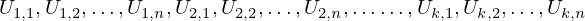

Common U11_to_Ukn of type ExprRange¶
from the theory of proveit.core_expr_types.expr_arrays¶
In [1]:
import proveit
# Automation is not needed when only building an expression:
proveit.defaults.automation = False # This will speed things up.
proveit.defaults.inline_pngs = False # Makes files smaller.
%load_expr # Load the stored expression as 'stored_expr'
# import the special expression
from proveit.core_expr_types.expr_arrays import U11_to_Ukn
In [2]:
# check that the built expression is the same as the stored expression
assert U11_to_Ukn == stored_expr
assert U11_to_Ukn._style_id == stored_expr._style_id
print("Passed sanity check: U11_to_Ukn matches stored_expr")
In [3]:
# Show the LaTeX representation of the expression for convenience if you need it.
print(stored_expr.latex())
In [4]:
stored_expr.style_options()
In [5]:
# display the expression information
stored_expr.expr_info()
| core type | sub-expressions | expression | |
|---|---|---|---|
| 0 | ExprRange | lambda_map: 1 start_index: 6 end_index: 2 |  |
| 1 | Lambda | parameter: 12 body: 4 | |
| 2 | Variable |  | |
| 3 | ExprTuple | 12 |  |
| 4 | ExprRange | lambda_map: 5 start_index: 6 end_index: 7 | |
| 5 | Lambda | parameter: 13 body: 9 | |
| 6 | Literal |  | |
| 7 | Variable |  | |
| 8 | ExprTuple | 13 |  |
| 9 | IndexedVar | variable: 10 indices: 11 | |
| 10 | Variable |  | |
| 11 | ExprTuple | 12, 13 |  |
| 12 | Variable |  | |
| 13 | Variable |  |